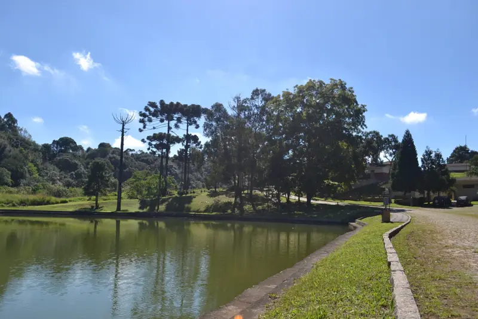
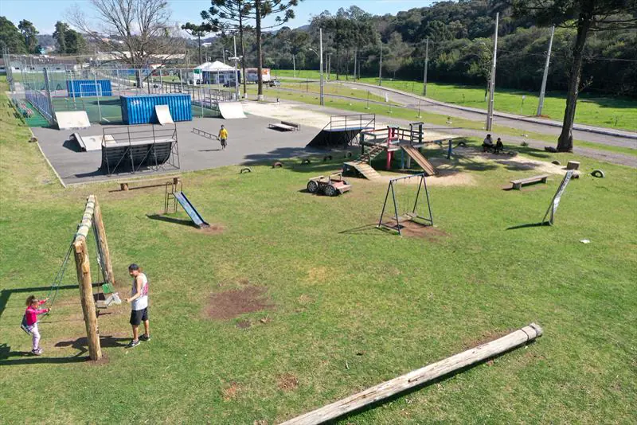
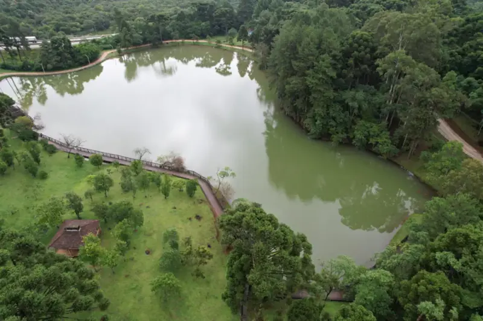
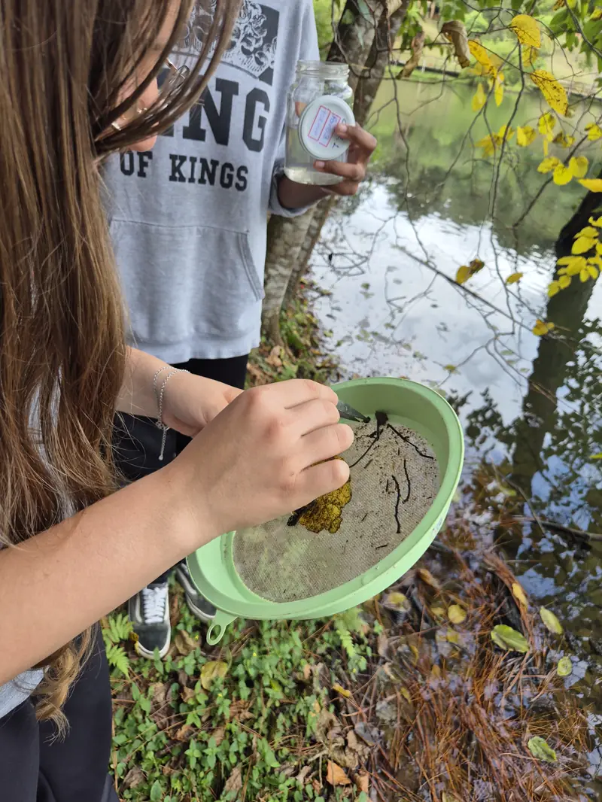
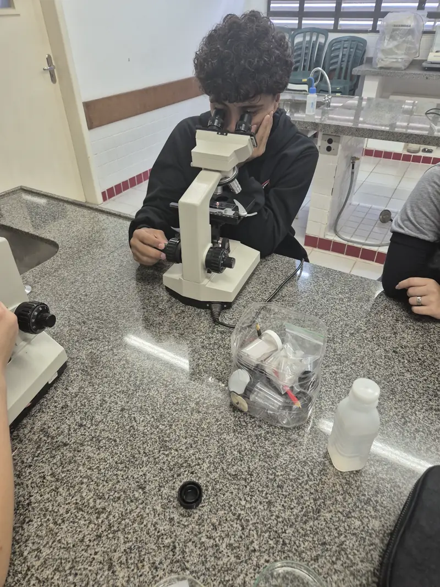
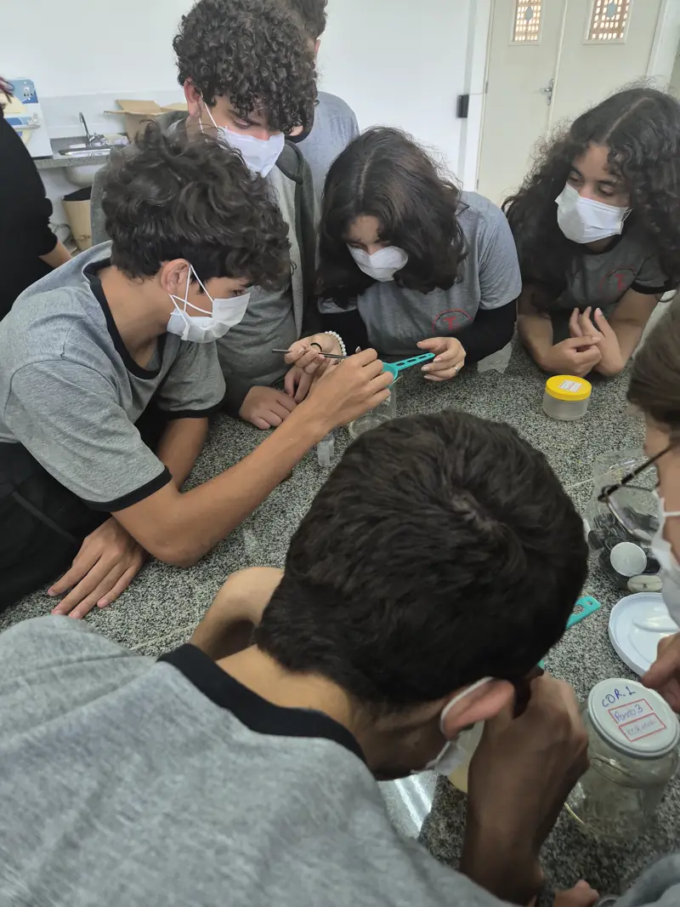
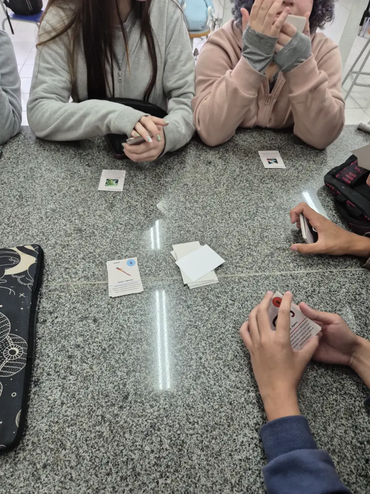

Estudo de Macroinvertebrados
Do lago ao microscópio: a pesquisa do clube no Parque Ambiental Anibal Khury.

Estudo de campo
Parque Ambiental Anibal Khury
O Parque Ambiental Anibal Khury, localizado no Paraná, é um espaço dedicado à preservação ambiental e ao lazer da comunidade. Reconhecido como o maior parque com área coberta da América Latina, o local oferece uma ampla infraestrutura para eventos, atividades culturais e esportivas, além de trilhas e áreas verdes para contemplação da natureza.
É um ambiente ideal para famílias, estudantes e amantes do meio ambiente, promovendo a educação ambiental e a valorização da biodiversidade local. O parque se destaca como um importante ponto de encontro e convivência para a população da região, unindo lazer, cultura e sustentabilidade.

Introdução ao estudo
O Parque sempre foi um local muito conhecido na região, situado bem próximo ao Theodoro de Bona. No entanto, nunca havia sido realizado um estudo sobre a vida local, a biodiversidade e a poluição do ambiente. Pensando nisso, foi organizado um passeio especial: nosso clube de ciências partiu para as margens do lago Jordão e iniciou a pesquisa, buscando compreender melhor as características ambientais do parque e sua importância para a comunidade.

Desenvolvimento do estudo
Às margens do lago, utilizamos peneiras para coletar algumas amostras de pequenos insetos, que foram preservadas em formol. Após uma semana, analisamos as amostras no microscópio e realizamos a identificação das espécies utilizando um guia de identificação de macroinvertebrados aquáticos. Em seguida, registramos em papel manteiga as espécies encontradas e a data de coleta. As amostras foram armazenadas em frascos de vidro com tampa (ou “frascos de conservação”), junto com o papel de identificação.


Como a identificação de espécies pode dizer sobre a saúde do ecossistema?
A identificação de espécies de macroinvertebrados é crucial para avaliar a saúde dos ecossistemas aquáticos. Esses organismos são sensíveis a mudanças na qualidade da água, como poluição e alterações no habitat. A presença ou ausência de determinadas espécies pode indicar níveis de poluição, oxigênio dissolvido e outros fatores ambientais.
Por exemplo, espécies mais sensíveis, como os Ephemeroptera (mayflies), indicam água limpa, enquanto espécies tolerantes à poluição, como os Diptera (moscas), podem prevalecer em ambientes degradados. Esse é o ponto principal do nosso jogo e pode ser melhor entendido ao jogá-lo.
Conclusão do estudo
A avaliação da comunidade de macroinvertebrados fornece uma boa interpretação acerca da saúde dos ambientes aquáticos. Entretanto, se faz necessário explorar o ambiente em outras estações climáticas a fim de registrar uma gama maior de indivíduos e dessa maneira obter um resultado mais holístico e fiel no que tange à qualidade dos corpos aquáticos do parque.
O presente estudo promoveu o engajamento dos alunos clubistas, incentivando o protagonismo juvenil, companheirismo, formação cidadã e aprendizagem significativa em todas as suas fases: coleta, triagem e identificação de organismos. A experiência certamente foi positiva, aproximando os alunos e a professora orientadora das vivências da pesquisa científica e promovendo o sentimento de pertencimento de todos os sujeitos envolvidos com o trabalho desenvolvido e incentivando o clube a seguir adiante com novas abordagens.


Descubra a vida nos riachos
Uma jornada científica para entender como pequenos organismos revelam a saúde dos nossos ecossistemas aquáticos.